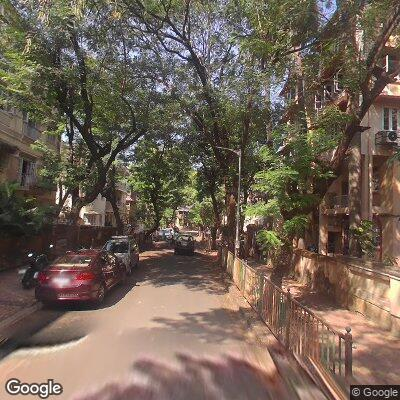
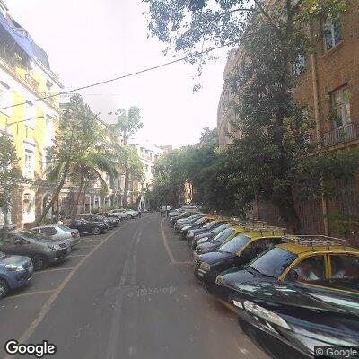
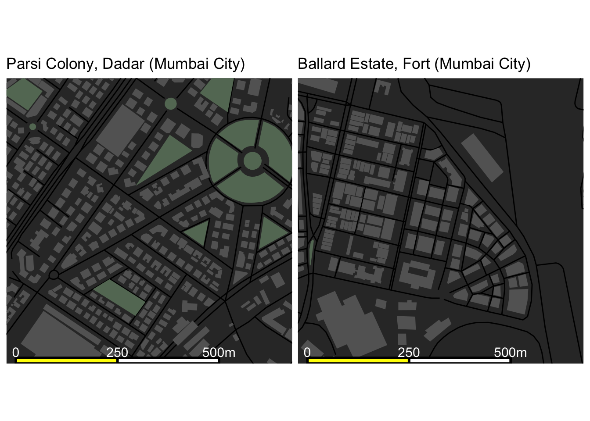

Charming neighbourhoods of Mumbai
One of the many stereotypes of Mumbai is that it is a city filled with abject poverty and slums wherever you look. While slums are a deeply intrinsic part of Mumbai’s urban reality, given their extensive spread, the city also has many beautiful spaces where people live and work amidst comfortable and beautiful urban environs. Here we look briefly at two such areas: the residential Parsi Colony in Dadar [1] and the business district of Ballard Estate in Fort [2].


Both neighbourhoods are planned designs from the British era of the early twentieth century where buildings were designed accommodate the available plot of land. The urban skeletons of both neighbourhoods have a pleasing flow even within unusual plot shapes. Parsi Colony takes it further by incorporating green space in different shapes within the overall design.
I’m particularly interested in understanding how people lived in and moved about these neighbourhoods and contrast it with my own lived experience within a very different neighbourhood in the urban sprawl of Navi Mumbai. So, my next set of readings is Boombay by Kamu Iyer which starts with the history, architecture and lived experience of Parsi Colony and nearby Hindy Colony [3].
